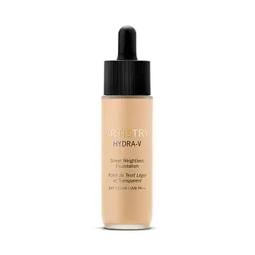

How to choose the right foundation?
How to choose the right foundation?
How to choose the right foundation?
How to choose the right foundation?
How to choose the right foundation?
- Determine Your Skin Type
- Oily skin: Opt for oil-free or matte foundations.
- Dry skin: Choose a hydrating or dewy foundation.
- Combination skin: Go for a balanced foundation,
or apply different products to different areas.
- Normal skin: You can choose almost any type
depending on your preference.
- Identify Your Skin Tone
- Skin tone generally falls into categories like fair, light, medium, tan, or deep.
Look at your face and neck in natural light to determine your overall tone.
The manufacture of cosmetics is currently dominated by a small number of multinational corporations that originated in the early 20th century,
but the distribution and sale of cosmetics is spread among a wide range of different businesses. The worlds largest cosmetic companies are The L'Oréal Group,
The Procter & Gamble Company, Unilever, Shiseido Company, Limited and Estée Lauder Companies, Inc.The market volume of the cosmetics industry in the US, Europe,
and Japan is about EUR 70B/y, according to a 2005 publication. In Germany, the cosmetic industry generated EUR 12.6 billion of retail sales in 2008, which makes the German
cosmetic industry the third largest in the world, after Japan and the United States. It has been shown that in Germany this industry grew nearly 5 percent in one year, from 2007
to 2008. German exportsin this industry reached EUR 5.8 billion in 2008, whereas imports of cosmetics totaled EUR 3 billion. The main countries that export cosmetics to Germany are
France, Switzerland, the United States and Italy, and they mainly consist of makeup and fragrances or perfumes for women.